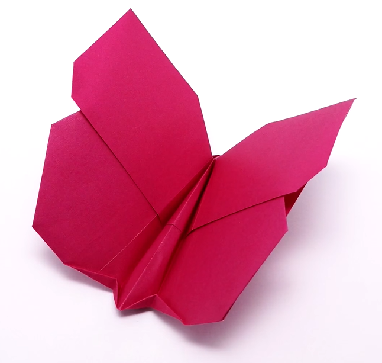

Diseños de Origami
Acerca de nosotros
Síguenos

Datos curiosos de las mariposas
- No tienen pulmones, respiran através de espiráculos, unos orificios por los que entra el oxígeno.
- Sus alas están hechas de escamas. Algunas pueden tener entre 200 y 600 escamas por milímetro cuadrado.
- Es el segundo animal con más especies en el mundo, pues se calculan entre 150.000 y 200.000 especies diferentes.
Datos curiosos de los pingüinos
- Actualmente existen 18 especies de pingüinos según la IUCN, Unión Internacional de la Conservación de la Naturaleza
- A la hora de salir del agua pueden propulsarse con un salto hasta llegar a los dos metros de altura.
- Tienen una vista privilegiada bajo el agua ya que pueden llegar a detectar presas incluso aunque el agua esté sucia y oscura.